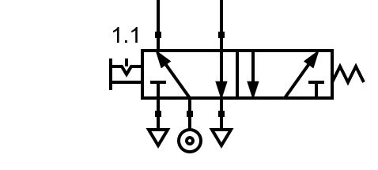

6. 5/2 valve¶
A 5/2 valve has 5 air paths and 2 positions:

5/2 valve at rest.¶
{kind=link}

5/2 valve activated.¶
The three ports at the bottom connect to the pressure source (middle port) and the exhausts on the left and right. The two upper passages are used to bring air to two different places or to remove that air during rest. This valve is designed to control two-way cylinders that we will see later.
In the following simulation we can see how this valve works by controlling two single-acting cylinders:
- When actuating the 5/2 valve, the air passes directly from the pressure source to the pneumatic cylinder 1.0, so the rod comes completely out. Meanwhile, the 2.0 cylinder connects with the exhaust, allowing it to return to its rest position.
- By bringing valve 5/2 to rest, the air previously introduced into cylinder 1.0 has an escape route through the valve, so this cylinder returns to its rest position. Meanwhile, all the pressure reaches the 2.0 cylinder, so the rod comes completely out.
A 5/2 valve, therefore, serves to control two opposite outlets. One of the outlets will always have pressure while the opposite will always have an exhaust connection and will be without pressure.
If we tried to do the same function with two 3/2 valves, we could have states in which the two valves are doing the same function (both giving pressure or both connected to exhaust), while the 5/2 valve ensures that one of the upper channels will always be doing the opposite function to the other channel.
Exercises¶
What is a 5/2 pneumatic valve and what parts does it consist of?
Explain in your words how a 5/2 valve works in each of its two positions.
Draw a 5/2 manually operated valve at rest. Also draw an actuated 5/2 manual override valve.
In both cases, draw the pressure inlets and exhausts.
Draw in the following simulator two single-acting cylinders operated by a 5/2 manual valve with interlock.
Check that its operation is the same as the simulated circuit at the beginning of this topic.
How similar and what difference is there between a 5/2 valve and two 3/2 valves?